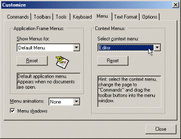

TeXnicCenter allows you to customize the main and the context menus.
To customize the menus, open the dialog
Customization and select the tab
'Menu'.

The meanings of the controls are:
- Application Frame Menus
- 'Show Menus for'
- List of available main window menus. Select the menu you
would like to customize.
For TeXnicCenter only the 'Default Menu' is available.
- 'Reset'
- Resets the selected main window menu. All the changes that have
been made to the menu since the installation of TeXnicCenter will
be lost.
- 'Menu animations'
- Specifies, which animation to use when opening a menu.
- 'Menu shadows'
- If this option is enabled, menus in TeXnicCenter will have a
fading shadow, otherwise the menus are displayed normally.
- Context Menus
- 'Select Context Menu'
- List of available context menus. Select the menu you would
like to customize.
Context menus pop up, when you click the right mouse button.
TeXnicCenter uses the following context menus:
- 'Editor'
- Shown when you right click into an editor window.
- 'Main Window Area'
- Shown when you right click into the main window's
background or on the editor's scrollbars.
- 'Navigator View'
- Shown when you right click onto an item in the
navigator bar.
- 'Reset'
- Resets the selected context menu. All the changes that have
been made to that context menu since the installation of
TeXnicCenter will be lost.